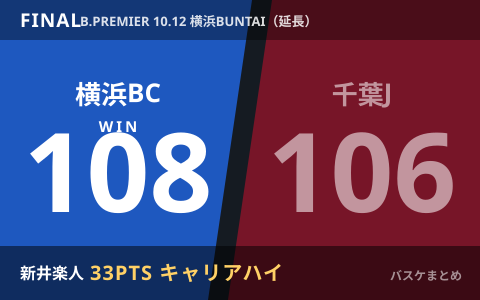

A東京と群馬が6勝1敗で首位並走 横浜BCは新井楽人が延長で33得点、長崎は3連勝

10月12日、りそなB.LEAGUE PREMIER(Bプレミア)は東西で試合が行われました。東地区ではアルバルク東京が大阪エヴェッサに103-78、群馬クレインサンダーズが佐賀バルーナーズに72-61で勝利し、ともに6勝1敗として首位を並走しています。同地区では横浜ビー・コルセアーズとの延長戦も話題に。ドラフト1巡目3位のルーキー新井楽人がキャリアハイの33得点を挙げ、千葉ジェッツを108-106で下しました。西地区では長崎ヴェルカが神戸ストークスを85-69で下し、今季初の3連勝。チーム記録となる今季最多得点での勝利となりました。
東地区首位攻防、A東京と群馬がそろって6勝1敗
アルバルク東京は大阪エヴェッサに103-78で快勝し、群馬クレインサンダーズも佐賀バルーナーズを72-61で下しました。これで両クラブはともに6勝1敗とし、開幕から好調を保つ東地区の首位争いを引き続きリードしています。
| 対戦 | スコア |
|---|---|
| アルバルク東京 ○ － ● 大阪エヴェッサ | 103－78 |
| 群馬クレインサンダーズ ○ － ● 佐賀バルーナーズ | 72－61 |
横浜BC、ルーキー新井楽人のキャリアハイ33得点で延長の死闘を制す
横浜ビー・コルセアーズは千葉ジェッツとの対戦を延長に持ち込み、108-106で勝利しました。ドラフト1巡目3位で加入した新井楽人がフィールドゴール17本中13本、3ポイント9本中6本を成功させるキャリアハイの33得点を記録。これまでの自己最多は10月4日の信州戦で挙げた25得点でしたが、今回はそれを大きく上回る活躍となりました。この日は5試合ぶりにベンチスタートでしたが、第4クォーターにはチーム最多の10得点を挙げ、延長での勝利に貢献しています。新井は試合後、得点の多くが味方との連携から生まれたものだと振り返りました。
| 対戦 | スコア |
|---|---|
| 横浜ビー・コルセアーズ ○ － ● 千葉ジェッツ（延長） | 108－106 |
西地区は長崎が3連勝、外国籍3選手で61得点
長崎ヴェルカはホームのハピネスアリーナで神戸ストークスと対戦し、85-69で勝利しました。10日の群馬戦（70-59）に続く連勝で、今季初めての3連勝です。ブラントリー、ランドルフ、新戦力のアギラールの外国籍3選手が合わせて61得点を挙げる活躍を見せ、85得点は長崎にとって今季最多得点での勝利となりました。
| 対戦 | スコア |
|---|---|
| 長崎ヴェルカ ○ － ● 神戸ストークス | 85－69 |
Q. 「延長で33得点」のうち、延長分はどのくらい？
A. 報道では第4クォーターまでにチーム最多の10得点を挙げたとされており、33得点の大半はレギュラータイム内のものです。延長部分の個人成績までは報道で確認できていません。
出典：デイリースポーツ・共同通信配信「Ａ東京、群馬が６勝目」／バスケットボールキング「横浜BCの新井楽人がキャリアハイ33得点『チームメートのおかげ』ルーキー躍動し千葉J撃破」／NBC長崎放送・長崎文化放送・長崎国際テレビ「長崎ヴェルカ VS.神戸85-69で快勝」ほか
https://www.daily.co.jp/general/2026/10/12/0020921356.shtml
https://basketballking.jp/news/japan/20261012/637457.html
https://news.yahoo.co.jp/articles/be6b449f46995a4bec2960f3dbe1a887e1819de8